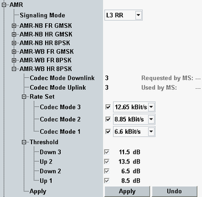

The "AMR" parameters configure the adaptive multi-rate (AMR) codec for speech channel coding of circuit switched voice connections.

- Defining a rate set and upper and lower thresholds for the codec mode swapping,
- Selecting a downlink and uplink mode from the set of enabled codec modes, and
- Verifying that the MS actually requests/uses the expected codec modes
- The downlink test has to verify that the MS can monitor the quality of the dedicated traffic channel and request a codec mode according to the DL TCH level. The power thresholds for switching the AMR codec modes are specified in standard 3GPP TS 51.010. Vary the DL TCH level ("RF Settings > TCH/PDCH > Carrier 1> DL Reference Level") and compare the codec mode "Requested by MS" with the expected value.
- The uplink test has to verify that the MS applies the codec mode indicated by the network/R&S CMW, and that the MS correctly signals the used codec mode to the network. Verify that the codec mode "Used by MS" is equal to the "Codec Mode Uplink".
The AMR signaling mode is set generally and the following parameters can be configured individually for each codec type (AMR-NB FR GMSK, AMR-NB HR GMSK, ...).
Specifies the mechanism used to modify the AMR configuration on the radio interface without interruption of the speech transmission.
- Either via the robust AMR traffic synchronized control channel (RATSCCH)
- Or via layer 3 radio resource (L3 RR) signaling using FACCH
Signaling via RATSCCH is much faster than L3RR.
Option R&S CMW-KS210 required.
Remote command:"Codec Mode Downlink" specifies the codec mode that the R&S CMW uses to generate the speech data transmitted to the MS under test. This mode is maintained, irrespective of the DL codec mode requested by the MS. The requested mode is displayed to the right for information.
"Codec Mode Uplink" specifies the codec mode that the mobile under test has to use in uplink direction. The actual UL codec mode used by the MS is displayed to the right for information.
Each codec mode corresponds to the data rate selected under "Rate Set". All connections involving a closed loop or pseudo-random bit sequences require equal uplink and downlink codec modes.
Remote command:For other codec types, see "AMR Configuration".
Selects the supported data rates (modes) for an AMR codec type. Depending on the codec type, either three or four codec modes can be configured.
The selected data rates must be different from each other. They are automatically sorted in descending order so that "Rate (Mode n) > Rate (Mode n-1)".
You can deactivate modes to restrict the test model to fewer supported modes.
Remote command:For other codec types, see "AMR Configuration".
Selects the upper and lower limits for the codec mode swapping (see "Rate Set"). For detailed information, refer to the 3GPP TS 45.009.
Remote command:When you have finished a reconfiguration press "Apply" to accept the changes. If you close the configuration dialog without pressing "Apply", the changes are lost. "Undo" activates the previous configuration.
These functions are available even during an established CS connection.